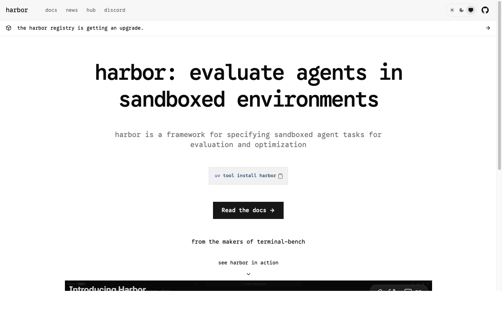

SkillsBenchA benchmark for evaluating how well reusable agent skills work across diverse tasks.WebsiteGitHub
HarborAn open-source framework for agent evaluation, task environments, and reproducible rollouts.WebsiteGitHub